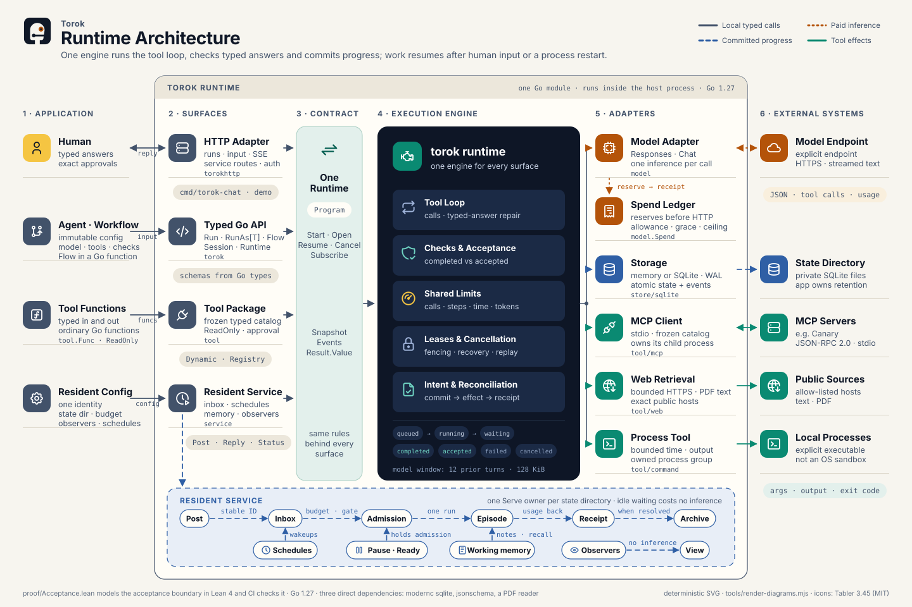

Plain Go
An agent is configuration. A workflow is a function of a context, a Flow and your input. A tool is func(ctx, In) (Out, error). RunAs[T] names the answer type once.
Private · Go agent harness
török /ˈtørøk/ · Hungarian for Turk. Named after Kempelen's chess automaton, the machine that played well because a person sat inside. Torok keeps the person in the loop on purpose.
Torok is the harness: it runs the tool loop, checks typed answers and commits progress, so a run resumes after a person answers or the process comes back. You bring a model and ordinary Go functions. Desk runs on it.
add := tool.Func("add", "Add two numbers",
func(_ context.Context, in numbers) (float64, error) {
return in.A + in.B, nil
}, tool.ReadOnly())
agent, err := torok.New(torok.Config{
Instructions: "Use add for addition.",
Model: llm,
Tools: []tool.Tool{add},
})
result, err := agent.Run(ctx, "What is 19.50 plus 4.25?")
fmt.Println(*result.Value)The surface is small on purpose: generic methods where a type belongs on a value, plain functions for behaviour, named config fields. No graph DSL, no builder chain.
An agent is configuration. A workflow is a function of a context, a Flow and your input. A tool is func(ctx, In) (Out, error). RunAs[T] names the answer type once.
Model calls commit before any tool runs. Workflows replay from checkpoints. A question or an approval parks the run and frees the worker. The answer resumes it once, even if it arrives twice.
Calls, steps, depth, concurrency, active time and tokens are set on the root and shared by every child. A spend ledger reserves money before the request and settles on the receipt.
Intent commits before an effect starts. A lost result waits for reconciliation instead of a blind retry. An approval freezes the exact call it approves.
For agents that stay on: a durable inbox, timers, bounded memory, observers with their own freshness, daily admission budgets, pause. Idle costs nothing.
Responses and Chat Completions. Stdio MCP with a frozen catalogue. Bounded HTTPS and processes. An HTTP and SSE surface you mount in your own server.
The harness sits between your functions and the store. Model and tool adapters are the only code that leaves the process, and both report to the same limits. The resident service and the HTTP adapter sit on the same runtime. There is no second engine.

Private, experimental API, Go 1.27, three direct dependencies: SQLite, JSON Schema, a PDF reader. If you want to argue about what "accepted" should mean, get in touch.